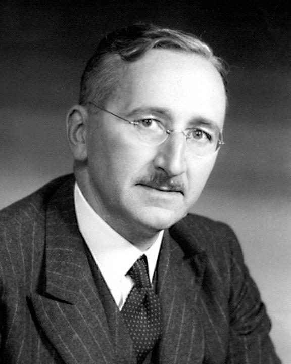

这一页在做什么
导言是全书的路线图。它问的是：一项措施，小到零售商改造门店，大到国家花钱刺激经济，我们凭什么事先知道它有没有用，事后又凭什么说它起了作用？作者用自己做咨询时的一次碰壁和 2009 年的刺激法案之争把问题立起来，再把两条线拴在一起：做实验，和保留试错的自由。最后他把全书收成五句话。读的时候抓两样：「反事实」这个词，和五句话里的每一个限定词。
2009 年 2 月 17 日，奥巴马在丹佛签署《美国复苏与再投资法》后，空军一号上拍的签名特写。§1 第 4–7 段的刺激法案之争，争的就是这部法律。Pete Souza（白宫官方摄影），公有领域，维基共享资源
读之前：这一页在全书的哪里
这是正文的第一页，作者和他的公司在「开读之前」已经介绍过。导言里埋了几处往后指的路标，本站回原文核过：第 14 段说遗传演化的机制后面细讲，在第 3 章；刺激法案之争到第 9 章第 14 段被作者点名拿回来用，第 13 章第 8 段又把它当成该尽量避免的「全有或全无」式改革；第 19 段说推广问题的术语是 Campbell 发明的，第 8 章开头就讲他 1957 年的那个区分；第 24 段的「没有魔法」，第 12 章第 108 段又说了一遍。
第 5–6 段拿几位诺贝尔奖得主为刺激法案吵翻，说明经济学的预测靠不住。可衰退时的财政刺激是经济学里分歧最大的题目之一，在许多别的问题上，经济学家的共识要大得多。别从这一个例子推出「经济学家什么都吵」。
一项政策到底有没有用，为什么连事后都说不清？知道得这么少，社会又该怎么办？
读的时候带着这几个问题。不用先找答案，读完回来对照「检查一下理解」。
合伙人一句「挑几家店试试」就把作者问住了。作者说哪类预测靠分析就够，哪类不行？§1
作者说 Hayek 和 Popper 争的不是「绝对自由」。那是什么？§2
前面刚说要多做实验，作者为什么马上又说要「再谦卑一点」？§3
五句话里有哪些限定词？把它们去掉，意思会变成什么样？§4
这一页的路线
导言只有三千词，却把全书三部的路都先走了一遍。§1 从小处起步：一个门店改造的故事，放大到一场国家规模的刺激法案之争，再收到一个词上：反事实。§2 一下子转进政治思想史，从「我们预测不了」走到「所以要保留试错的自由」，请出 Hayek 和 Popper；接着说光重读老书不够，要加上演化和随机试验两样新东西，由 Campbell 把它们拼在一起。这一步是第三部的伏笔，留意作者用的是 I believe。§3 又给自己泼冷水：实验结果难推广，一个笨办法是做大量的实验，而商业公司已经在某些试验上做到了；然后说没有魔法。§4 把全书收成五句话和三部结构。读的时候会觉得 §1 到 §2 跳得最猛，§3 像在和 §2 抬杠：这是作者有意的，他一边提出主张，一边给主张设限。
§1 §2 §3 §4
门店改造的故事
刺激法案之争
反事实
Hayek 和 Popper
演化和随机试验
两层试错
推广难
海量实验和商业
没有魔法
五句话
三部结构
→ 第 1 章：培根和归纳
转进政治
泼冷水
收束
本站示意图。每一行是本站分的一节，浅色的一格是这一节落脚的地方；虚线是节与节之间的转弯。 作者落在哪： 社会科学应该多做实验，而且要像商业公司那样大批量地做；但实验结果难推广，只带来边际改进，大多数重要的政策争论仍裁决不了，所以社会要在很大程度上依靠没人设计的试错，再由战略和长远眼光给它划界。
分节地图
这一页是原书的导言。原书导言没有小标题，本站按话题分了四节；粗体是本站给的节名，下面是这一节第一段开头的几个词，在 Kindle 里搜它就能跳过去。每节标了档：「先读」不读就跟不上全书主线，「有空」好看但跳过不丢线。读完打个勾。
几家店试试；刺激法案约 1000 词 As a young corporate strategy consultant, … 第 1–3 段是全书的起点故事，第 4–7 段是刺激法案之争，第 8 段一句话点出反事实，是本节的落脚点。 因为无知，所以要自由约 900 词 I believe that recognizing this deep uncertainty … 从方法转到政治。第 12 段那条分寸最容易读丢。跳过会少掉第三部政治主张的根。 再谦卑一点：没有魔法约 900 词 But I will argue that we should … 第 18–19 段扫盲项目的例子是推广问题的最短版；第 24–25 段作者给自己的主张连加几道限定。 全书五句话约 300 词 The thesis of this book can therefore … 五句论点逐字读，盯住每个限定词；第 33 段说明第一部为什么要从科学哲学讲起。
先用中文过一遍：这一页的概念
先把这一页用到、作者默认你懂的几个概念讲一遍。讲的是概念本身，作者拿它推出什么，读原书时自己看。导言里一笔带过、后面才细讲的可控实验 、随机分组 、隐性知识 、演化认识论 、外部效度（推广问题） ，点进去看。
§1 反事实 counterfactual 反事实就是「要是当初没做这件事，会怎样」。一项措施的效果，严格说是两个世界之差：做了它的世界，减去没做它的世界。麻烦在于我们只能活在其中一个世界里，另一个永远看不到，只能估。统计学里把这叫作因果推断的根本难题。估反事实大致有三条路：和以前比（前后对比，可同时变的东西太多）；和别人比（找没做的人当对照，可他们可能本来就不一样）；抽签决定谁做谁不做，让对照组替我们「演」出那个看不到的世界。程序员的类比：线上出了故障，你回滚了一个提交，故障消失了；可同一时间流量也在回落，你没法知道「不回滚会不会也好了」。
失业率
法案通过 一年后 两年后
支持者想象的「没有法案」
实际（看得到）
反对者想象的「没有法案」
支持者说的效果
本站示意图，曲线是编的，不是真实数据。实线只有一条，虚线可以画很多条：两边看着同一条实线，各自画一条看不到的虚线，就能各说各有理。 在这一页： 第 8 段：作者说刺激法案之争的症结，是没有可靠办法量出反事实；第 7 段那位虚构教授的辩解，就是在改写反事实。
§2 知识问题 knowledge problem Hayek 1945 年在《美国经济评论》上的文章《知识在社会中的运用》提出的问题。经济要用到的知识，大多是零散的、只属于某时某地的：哪家店今天哪样货卖得快，哪个工人知道哪台机器快坏了。这些知识分散在千万人身上，很多说不出来，也来不及汇总，没有哪个计划者能把它们收齐。Hayek 认为价格的作用，就是把这些零散的知识压成一个信号传出去：他举的例子是锡，锡变贵了，用锡的人不必知道为什么，也会省着用。所以他认为中央计划代替不了市场。程序员的类比：一个大型分布式系统里，每个节点只知道自己的局部状态，你写不出一个全知的中央调度器，只能让各节点按局部信号自己调整。
在这一页： 第 11 段：作者转述 Hayek，说政府控制会限制增长，因为社会比计划者能理解的复杂得多。第 14 章第 12 段讲自己公司时还会用这个词。
§2 零星社会工程 piecemeal social engineering Popper 在《历史决定论的贫困》和《开放社会及其敌人》（1945）里提出的说法，也译「渐进社会工程」，和「乌托邦式社会工程」相对。后者先画好理想社会的蓝图，再照着蓝图把整个社会翻修一遍；前者一次只对付一个具体的、眼前的毛病，试一项有限的改革，看结果，错了再改。Popper 的理由是：改得越大，越说不清是哪一步出了错，也越难回头；小步改，才能从错误里学到东西，这和他「科学靠证伪进步」的想法是一套。这里的「工程」是褒义，指工程师那种动手修、动手试的态度，不是「操纵社会」。Popper 本人并不反对政府用这种办法去纠正市场的毛病，这一点他和 Hayek 看法不同。
在这一页： 第 15–16 段：作者说 Campbell 的两层试错是它的现代、实用版，还特意说「工程」这个词选得好。第 13 章第 7 段会再提到这个说法。
§2 结构化试错和非结构化试错 structured & unstructured trial and error 试错就是先做，看结果，留下管用的。作者转述 Campbell 的演化认识论时，把社会的试错分成两层。底层是非结构化试错：没人统一设计，千千万万的人各自尝试各种做法，开店、育儿、过日子的各种方式，管用的更可能被别人模仿、被保留下来，像生物演化里的变异加选择。上层是结构化试错：有人有意识地想出一个改进办法，再用严格的实验（比如随机试验）筛出哪个真管用。程序员的类比：开源生态里成千上万个库自生自灭，用的人多的活下来，这是底层；一个团队针对一个具体指标做 A/B 测试，这是上层。两层不是二选一，上层搭在底层之上。
在这一页： 第 15 段给出两层的说法；第 30 段全书第四句论点说要在很大程度上依靠的，是底层那种非结构化试错。
书里的人、研究和背景
按在书里出现的顺序排，标题前是节号。只讲到读懂这一页需要的程度。
§1 2009 年的刺激法案2008 年秋，美国爆发金融危机，经济陷入二战后最深的一次衰退，后来叫「大衰退」。奥巴马 2009 年 1 月就职，提出大规模刺激方案，2 月 17 日签署《美国复苏与再投资法》（ARRA），约 7870 亿美元，有减税、给州政府的钱、基建等。「刺激」的道理来自凯恩斯：衰退时人人捂紧钱包，政府多花钱、少收税，可以把需求托住，减少失业。反对的一方认为，政府花的钱会挤掉私人的支出，或者花得没效率，好处抵不上多出来的债。作者在这里不站队，他只问一个技术问题：效果能不能预先算出来，事后能不能量出来。
§1 吵架的诺贝尔奖得主和虚构的 X 教授主张刺激、还嫌不够大的：Paul Krugman（2008 年诺贝尔经济学奖）和 Joseph Stiglitz（2001 年）。认为不值得的：James Buchanan（1986 年）、Edward Prescott（2004 年）、Vernon Smith（2002 年）。第 5 段那句带引号的话，出自 Cato 研究所（华盛顿一家主张小政府的智库）组织的反对声明，2009 年 1 月底作为整版广告登在《纽约时报》等报纸上，约 200 位经济学家签名，这三位是签名人中的几位，不是他们各自的文章。第 7 段的「著名经济学家 X 教授」是作者虚构的，那句预测和事后的辩解都是假设。
1969 年 7 月 16 日，阿波罗 11 号发射。第 6 段的比喻：好比登月前夜，一群诺贝尔物理学奖得主有的说火箭飞不到月球，有的说燃料得加一大截。NASA，公有领域，维基共享资源
§2 Hayek、Popper 和英美的自由传统
F. A. Hayek。由 Mises Institute 提供，CC BY-SA 3.0，维基共享资源 第 9 段列的是作者心目中的一条谱系：Locke、Milton、Adam Smith，一直到 Popper 和 Hayek。这里的 Milton 是英国诗人 John Milton（1644 年的《论出版自由》），不是经济学家 Milton Friedman。Hayek 和 Popper 都是维也纳人，后来都在伦敦政治经济学院任教。作者把两人都叫做 libertarian（美国语境里指主张政府越小越好的立场），这是他的归类：放在 Hayek 身上大体合得上；Popper 在政府该不该有意干预经济这件事上和 Hayek 看法不同。第 11 段的「生活方式的试验」，借的是 J. S. Mill《论自由》（1859）里的说法。
F. A. Hayek 1899–1992 奥地利裔英国经济学家、政治哲学家，1974 年诺贝尔经济学奖。这一页里：第 11 段的「知识问题」，第 13 段的《通往奴役之路》。
Karl Popper 1902–1994 奥地利裔英国哲学家。科学哲学里「证伪」说的提出者（第 2 章讲），政治哲学名著《开放社会及其敌人》。这一页里：「开放社会」和「零星社会工程」。
§2 《通往奴役之路》的销量Hayek 1944 年出版的《通往奴役之路》，警告政府对经济的全面计划会一步步侵蚀个人自由。第 13 段说「在这场危机里」它的销量猛涨，指的是 2010 年 6 月：美国保守派电视主持人 Glenn Beck 在节目里大谈这本书，它随即冲上亚马逊畅销榜第一。作者接着问：既然如此，把老书翻出来重读不就够了？他的回答是不够。
§2 Campbell，以及 Comte 和 Saint-Simon第 16 段说 Comte 和 Saint-Simon 是社会科学「十八世纪的」奠基人。两人确是早期的开创者（「社会学」这个词就是 Comte 起的），但讲社会科学的著作都写在十九世纪，Comte 更是 1798 年才出生，说「十八世纪」不太准。他们盼着社会科学有朝一日像牛顿物理一样，用几条数学定律解释一大片现象；作者说这种想法至今还在推动很多社会科学，第 9 章会再谈 Comte。
Donald T. Campbell 1916–1996 美国社会心理学家、方法论学者，长期在西北大学任教。1957 年提出内部效度和外部效度的区分（第 8 章开头讲），提倡「实验的社会」：用严格的试验检验社会改革，不管用就换。这一页里：演化认识论和两层试错。
牛顿力学和登月 Comte、Saint-Simon
找脊髓灰质炎疫苗 Campbell
大量小实验 作者：再谦卑一点
理论越来越不完整， 指望得越来越少
§2 第 16 段 → §3 第 17、24 段
本站示意图。三种人对社会科学的三种期待，一级比一级谦卑；作者到第 24 段又说，连「疫苗」那样的东西也不太可能找到。 §3 作者的公司第 23 段说他和几个朋友创办了一家后来成了全球性公司的软件企业，做在特定商业场景里跑随机实验的工具。书里这里没点名，就是 Applied Predictive Technologies（APT），第 11 章第 11 段起他会细讲。公司的来历和去向见「开读之前」。读他对商业实验的评价时记着：这是一位卖实验软件的创办人的第一手经验。
§3 脊髓灰质炎疫苗脊髓灰质炎（小儿麻痹症）20 世纪上半叶在美国反复流行，多是孩子得病，常留下终身瘫痪。1954 年，Thomas Francis 主持了 Salk 疫苗的现场试验，约 180 万儿童参加，用了双盲的安慰剂对照，1955 年 4 月宣布疫苗安全有效。它从此成了「一针下去问题解决」的代名词。作者在第 16、24 段两次拿它打比方；第 8 章第 13 段会讲研究者为什么有把握把这次试验的结论直接推广出去。
词与短语
按节排，每节前面是分节地图里的节名。标着「每个字都认识」的，是熟词生义、习语和反话，最容易读错。灰色的那几个字是原句里的位置，在 Kindle 里搜它就能找到。
§1 几家店试试；刺激法案
adjudicate among
… required for adjudicating among competing theories …
在……之间裁决
法律用语，本义是法官判案。全书第三句论点里还会出现：社会科学裁决不了大多数政策争论。
intervention
… effects of business interventions intended to …
（有意采取的）措施、举措
不是「干涉别人」。这是政策评估和医学的说法，指为了改变结果而做的任何事：改造门店、发放补贴、开一种药都算。全书到处用。
subterranean model-tuning
… this kind of subterranean model-tuning became …
暗地里调模型
作者自造的说法。subterranean 是「地下的」，指不摆到桌面上地微调假设，直到模型给出想要的结论。他说分析越复杂，这事越难免。
cut through
… controlled experiments could cut through the complexity …
（快刀斩乱麻地）穿透、理清
不是「切开」：说的是绕过一团纠缠不清的因素，直接得到答案。
set aside
… Setting aside for a moment ideological …
暂且撇开
作者先把立场和价值观放一边，只谈一个技术问题。这是他全书谈政策时的惯用姿态。
get to
… dollars that got to the reliability …
触及（问题的要害）
不是「到达」：这个问题直接碰到了「我们对政府项目的预测有多可靠」这个根子。
a triumph of hope over experience
… a triumph of hope over experience …
明知不行还抱着指望
英语里的一句名嘲，常说出自 Samuel Johnson 讥讽某人再婚。字面是「希望战胜了经验」，意思是不吸取教训。这是签名信里的话，不是作者的话。
directionally incorrect
… would be directionally incorrect about its …
连方向都错了
咨询和金融行话。作者说事前唯一能确定的，是有好几位得主会连「有用还是有害」都判错。
roll around
… when 2011 rolled around and unemployment …
（某个时间）到来
口语，和「滚」无关：等到 2011 年真到了的时候。
a safe bet
… It’s a very, very safe bet …
几乎可以肯定
字面是「稳赢的赌注」。两个 very 是作者在调侃：这位教授一定会这么辩解。
in some ineffable sense
… like physics in some ineffable sense …
在某种说不清道不明的意义上
ineffable 是「无法言说的」。作者在撇清：他不是要说「社会科学不像物理」这种空话。
a body of
… not produced a substantial body of …
一大批、一整套（知识、规则）
body 不是「身体」，是「成体系的一批」，如 a body of evidence。
nonobvious
… useful, nonobvious, and reliable rules …
不显而易见的
作者的固定搭配「有用、不显然、可靠」，第 2 章第 8 段先给出说法，第 11 章第 40 段正式定义。大意：不是行家本来就知道的。
§2 因为无知，所以要自由
open-ended
… through an open-ended process of trial …
没有预定终点的、开放式的
没人事先定好结果，边试边看往哪走。
libertarian
… the twentieth-century libertarian thinkers, pre-eminently Sir …
自由意志主义的（主张政府越小越好）
美国政治用语，指主张最小政府、最大个人自由的立场，和中文泛说的「自由主义」不是一回事；美国的 liberal 反而多指主张政府多管的左派。把 Popper 也算进来是作者的归类。
democratic capitalism
… The resulting system of democratic capitalism …
民主资本主义（民主政治加市场经济）
美国保守派常用的说法，指西方这套制度整体。
and perhaps creates
… capitalism experiences (and perhaps creates) periodic crises …
（也许还制造了）
括号里的让步：作者承认这套制度不只是遭遇危机，也许危机就是它自己造成的。他立场鲜明，但不回避这一点。
understandably
… The Great Depression understandably led to …
可以理解地
作者先表示理解：大萧条之后政府扩张是情有可原的。接着才说代价。
free play
… created by the free play of markets …
自由运作
play 不是「玩」，是机器零件那种「活动的余地」，引申为不受约束地运转。
experiments in living
… social tolerance, and experiments in living …
生活方式的试验
借自 J. S. Mill《论自由》第三章的说法（Mill 原文作 experiments of living）：各人试各自的活法，社会从中学到哪种可行。
assumption of knowledge
… against an unwarranted assumption of knowledge …
自以为知道
assumption 在这里不是「假设」，是「自居、揽到自己身上」（如 assumption of power，掌权）。他们反对的是控制者自居全知。
dust off
… simply to dust off our copies …
把旧东西翻出来重新用
字面是「掸掉灰尘」。作者在设问：把 Hayek 和 Popper 的老书翻出来重读就行了吗？他的答案是不行。
the fashion for
… response to the current fashion for …
……的风气、一时的潮流
fashion 不是「时装」。说「政府控制」是一时的风气，带一点不以为然。
tentatively
… started to move tentatively into social …
试探性地
限定词：随机试验进入社会项目评估，作者说才刚起步、还很小心。
entertain
… than what was entertained by the …
怀有（想法、希望）
熟词生义：不是「招待、娱乐」，是心里抱着某种想法，如 entertain doubts。
animate
… whose ideology continues to animate large areas …
驱动、给……注入灵魂
不是「做成动画」。说那种「社会科学终将像物理」的想法至今还在推动很多研究。
§3 再谦卑一点：没有魔法
humbler still
… that we should be humbler still …
还要更谦卑
still 放在比较级后面是「更加」，不是「仍然」。这一段只有一句话，是整个导言的转折。
with tolerable reliability
… conclude with tolerable reliability that …
相当可靠地、可靠得过得去
tolerable 不是「能忍受的」，是「够用的」。作者说科学给的就是这种够用的可靠，不是绝对的确定。
and by the way
… And by the way, even this …
而且还有
口气不是「顺便一提」的闲笔，是再补一刀：就算那条长长的规则，十年后也会失效。
obtain
… when different background conditions obtain in …
（情况、条件）存在、通行
熟词生义：不及物的 obtain 不是「获得」，是「成立、存在」，书面语。
would not be news to
… generalization would not be news to Campbell …
……早就知道
往轻里说：「对 Campbell 来说不算新闻」，意思是他早就研究过这个问题，至今讨论它用的术语就是他发明的。
brute-force approach
… A brute-force approach to this problem …
笨办法、蛮力解法
就是程序员说的「暴力解法」：不靠巧妙的理论，把所有情况一个个试出来。
might very well
… we might very well discover some …
很可能会
限定词：作者对「海量实验能摸出规则」有一定把握，但用的是 might，不是 will。
for certain kinds of tests
… been accomplished for certain kinds of tests …
在某些类型的试验上
限定词，容易读丢：商业公司做到的「又便宜又多」只限于某些试验，不是什么都能这么试。第 22、23 段又说 in specific contexts、narrowly defined。
pay dividends
… Greater rigor can pay enormous dividends …
带来丰厚的回报
dividend 本义是股票分红，这里引申为「好处」。
in at least some areas
… policies in at least some areas …
至少在某些领域
又一个限定：作者没说实验能改进所有政策。
there is no magic
… is that there is no magic …
没有魔法、没有捷径
作者说这也许是他从商业实验里学到的最重要的一课，并说有两层意思，读原文时数一数。
the moral equivalent of
… the moral equivalent of polio vaccine …
相当于……的东西
moral 在这里和「道德」无关，意思是「实质上等同的」。套用 William James 一篇文章的题目 The Moral Equivalent of War。
silver bullet
… very few such silver bullets out …
灵丹妙药、一招制胜的办法
传说只有银子弹能打死狼人。程序员可能听过 No Silver Bullet 那篇软件工程名文，是同一个比喻。
experiment its way to
… cannot blindly experiment its way to success …
靠一路试验走到（成功）
「动词 + one’s way to」句式：靠不停地做某事抵达某处。作者说盲目试验救不了一家战略错误的公司。
political economy
… with a dysfunctional political economy cannot …
政治经济体制
在这里不是学科名「政治经济学」，指一个社会政治和经济安排的整体。
qualification
… Even with all of these qualifications …
限定条件、保留意见
熟词生义：不是「资格」。作者自己点明他刚才加了一串限定。
somewhat
… than we are now: somewhat improve …
在一定程度上
这一段连用三个 somewhat：作者许诺的只是「改进一些」，别读成「彻底改变」。
§4 全书五句话
currently
… social science currently is not capable …
目前
第一句论点的限定词之一（另一个是 most）。作者说的是「现在还不能」，不是「永远不能」。
very likely
… Social science very likely can improve …
很可能
第二句论点的把握程度：很有把握，但不是断言。
a heavy reliance on
… calls for a heavy reliance on …
在很大程度上依靠
heavy 是「很大程度上」，不是「完全」。第五句马上给它划了边界。
predominantly
… are established predominantly by the need …
主要地
限定词：边界主要由战略和长远眼光来定，不是只由它们来定。
mere assertion of belief
… To get beyond mere assertion of belief …
光是表态说「我相信」
作者交代为什么要从科学哲学讲起：不想只是摆立场，要把理由讲到底。
a granular appreciation
… when a granular appreciation for the …
细致入微的理解
appreciation 不是「欣赏」，是「理解、体会」；granular 是「颗粒度细的」，程序员熟悉的那个 granularity。
值得停下来的句子
Nonexperimental social science currently is not capable of making useful, reliable, and nonobvious predictions for the effects of most proposed policy interventions.— §4 第 27 段，全书第一句论点。本站译：不做实验的社会科学，目前还不能对大多数拟议中的政策，做出有用、可靠、又不显而易见的预测。
这是全书的第一块基石，也是最容易被说过头的一句。四个地方各管一层意思：nonexperimental 说的是不做实验的那部分社会科学；currently 是「目前」；most 是「大多数」，不是全部；useful, reliable, and nonobvious 三个条件要同时满足，作者没说非实验研究的结论全是错的，他说的是同时满足三条的预测太少。把这四处都去掉，就成了「社会科学没用」，那是他没说过的话。
In short, we need freedom because we are ignorant.— §2 第 11 段。本站译：简单说，正因为我们无知，所以需要自由。
这句是作者替 Hayek 和 Popper 那一派做的总结，前一句开头的 By this line of thinking 说明是在转述一条思路，但它也是全书第三部的口号。口气是下判断，而且很漂亮，正因为漂亮才要多看一眼：「无知」是认识论的结论，「自由」是政治主张，中间那个 because 跨了一大步。第 12 段马上补了一句分寸，读这句时要连着读。
读完：作者到底说了什么
读完这一页的几节再看。下面是作者在这几节里的论点，由本站按论点重新组织，不按原书的顺序；每条下面是依据所在的段落，拿不准就回书里那几段再读一遍。导言的论点就是全书的五句话，下面按这五句排。
一、不做实验的社会科学，目前还不能对大多数拟议中的政策，做出有用、可靠、又不显而易见的预测 凭据是他二十年的咨询和商业经验：成本常能靠工程测算预估，可一到预测人对措施的反应，他发现几乎总能用数据搭出对立的分析，微调假设就能「证明」几乎任何方案成或败。政策放大了同一个问题，症结是反事实量不出来。
§1 第 3、7–8 段，§4 第 27 段 二、社会科学多做实验，很可能会变得更有用，也应该这样做 不是做一次，而是像商业公司那样，把实验做得便宜、成批、半自动，做成百上千次，去摸出一项政策在什么条件下管用。作者说商业已经在某些类型的试验上做到了，和正式的社会科学结合能两边都受益。
§3 第 20–23 段，§4 第 28 段 三、即使这样改进了，它也裁决不了大多数重要的政策争论 理由是推广难：现象越复杂，实验结果越带不走，一次实验检验的只是「这个方案在这个情境下行不行」；真正的预测规则带着一长串条件，过些年还会失效。加上他说的「没有魔法」：不太可能找到社会领域的疫苗，实验只带来边际改进。
§3 第 18–19、24 段，§4 第 29 段 四、认清这种不确定，就该在很大程度上依靠没人设计的、自发的试错 作者用 I believe 引出：深层的不确定应当让我们看重试错的自由，这是 Hayek、Popper 那条传统的主题。但他强调两人要的是社会的适应能力，不是绝对自由，反对的是控制者「自以为知道」。他想做的是给这条老传统补上演化和随机试验两样新东西。
§2 第 9、11–12、14–15 段，§4 第 30 段 五、试错的边界，主要由战略和长远眼光的需要来定 作者说战略错误的公司不能靠盲目试验走向成功，政治经济失灵的社会也不能；所以不能把未经检验的社会科学理论当成可靠的预测，但战略和某种长远眼光永远少不了。全书第三部会展开这一句。
§3 第 24 段，§4 第 31 段
合起来： 作者的立场两头都有：对社会科学的预测能力很悲观，对「多做实验」很积极，又提醒实验救不了一切。全书三部依次推这五句：第一部讲实验为什么是可靠知识的根，第二部讲今天的社会科学缺什么，第三部讲政治上该怎么办。
对照今天
这本书 2012 年出版。下面挑出这一页里能被后来的研究检验的说法，分「书里 / 当时 / 今天」三栏，并给一个结论。结论判的是标题里「书里的说法：」后面那一句。全书的这一节汇总在对照今天 。
成立 后来的研究支持这句话。部分成立 大方向对，细节或适用范围要改。被改写 后来的研究推翻了它，或者换了一种说法。有争议 学界至今没有定论，两边各有代表性的研究。书里的说法：刺激法案的效果，就算事后也分不清几位得主谁对谁错
书里 作者说当时就看得出，即使事后也没法知道谁对，因为没有可靠办法量出「没有法案会怎样」（§1 第 7–8 段）。
当时 真实版的 X 教授确实出现过：2009 年 1 月，奥巴马的顾问 Romer 和 Bernstein 的报告估计，有了刺激方案，失业率峰值会略低于 8%；结果 2009 年 10 月升到 10% 左右。支持者说是衰退比预想的深，反对者说刺激没用。
今天 方向上多数经济学家站到了一边，大小上仍各说各的。芝加哥大学的 IGM 专家组 2012、2014 年两次问：法案是否让 2010 年底的失业率低于没有它时？绝大多数同意。问收益是否超过成本，据圣路易斯联储 2014 年一篇文章的转述，作答的 37 人里 25 人同意、10 人不确定、2 人不同意。美国国会预算办公室估计，法案的作用在 2010 年最大，让失业率低了 0.4 到 1.8 个百分点，区间之宽，正说明反事实仍是估出来的。核对于 2026-10。依据：IGM Forum「Economic Stimulus Revisited」（2014）；Dupor，圣路易斯联储 2014；CBO 2014 年 ARRA 影响报告。
另一边 Conley 和 Dupor 2013 年在《货币经济学杂志》上用各州数据估计：法案主要保住了州和地方政府的岗位，对私营部门就业的效果不确定，可能为负。
书里的说法：商业公司已经在某些类型的试验上，把实验做成大批量、低成本、半自动的流程
书里 过去二十来年，这在某些类型的试验上已经做到，而且是在商业公司里，不是在正式的社会科学里（§3 第 21–22 段）。
当时 Google、亚马逊、微软等网络公司已经在网站上大量做在线对照试验；作者的公司做的是门店和网点层面的试验。
今天 规模远超作者写书时。Kohavi、Tang、Xu 2020 年的《可信的在线对照试验》介绍说，书中讲到的一批大公司每年各做上万次在线对照试验。作者的限定 for certain kinds of tests 也仍然成立：容易成批做的是网页、推送、定价、陈列这类改得快、结果很快能量的改动，公司战略这类大决策仍然没法抽签。核对于 2026-10。依据：Kohavi, Tang & Xu, Trustworthy Online Controlled Experiments（剑桥大学出版社 2020）。
书里的说法：社会领域不太可能找到「脊髓灰质炎疫苗」那样的灵丹，实验只带来边际改进
书里 作者说这样的灵丹很可能极少，实验科学在这些领域只带来边际改进（§3 第 24 段）。
当时 政策评估界早有类似的经验之谈，如社会学家 Peter Rossi 1987 年的「评估铁律」：大规模社会项目经过严格评估，净效果的期望值是零。书出版前后，英国、美国等国政府开始设「行为洞察」或「助推」小组，专门用随机试验检验小改动。
今天 最有代表性的证据来自 DellaVigna 和 Linos 2022 年在《计量经济学》上的研究：美国两个政府助推小组做过的全部 126 项随机试验、涉及约 2300 万人，平均只让目标行为提高 1.4 个百分点（比对照组多约 8%）；学术期刊上发表的同类试验平均是 8.7 个百分点，差距大部分来自「效果大的才容易发表」。效果是真的，但很小，正是作者说的边际改进。核对于 2026-10。依据：DellaVigna & Linos, Econometrica 90(1), 2022。
本站怎么看
读完作者的论点，再看它站不站得住。每一块摆出三样：主流怎么看，作者怎么看，本站的评论。最后一句是本站对这一页的总体判断。
从「我们无知」能推出「所以要自由」吗
主流看法： Hayek 的知识问题在经济学里广受承认，主张政府多管的人也常引用。但「不确定」本身不偏向哪一种政治立场：不确定也可以推出要谨慎地管，比如金融和环境监管里的预防原则。就连作者举的 Popper 和 Hayek，在政府该不该有意干预经济上也看法不同（Notturno 2014 年的专著专门比较过两人）。
作者的看法： 他用 I believe 引出：深层的不确定应当让我们看重试错的自由（第 9 段）；同时说 Hayek、Popper 不反对一切监管和政府投资，反对的是「自以为知道」（第 12 段）。
本站的评论： 认识论那一半站得住：我们对政策效果确实知道得少。政治那一半是作者的立场，需要另外的论证。读第三部时，把「我们知道得少」和「所以政府该少做」当成两步看，并带着他第 12 段自己说的分寸：他反对的是假装知道，不是政府本身。
诺奖得主吵翻天，能说明经济学预测靠不住吗
主流看法： Gordon 和 Dahl 2013 年分析芝加哥大学 IGM 专家组的回答，发现经济学家在许多问题上有广泛共识，相关文献越多共识越强，也看不出按左右派站队。衰退时的财政刺激恰恰是最难做实验、分歧最大的一类。
作者的看法： 他用登月前夜的比喻说明分歧之大（第 5–6 段），但随即说，要点不是社会科学「不像物理」，而是它没有拿出一批有用、不显然、可靠的政策预测规则，症结在反事实（第 8 段）。
本站的评论： 比喻有力，但挑的是最难的例子，读者别带走「经济学家什么都吵」。作者真正的论据在第 8 段：重大政策的反事实量不出来。这一点站得住，后来的事也印证了：十几年后，刺激法案的效果仍是一个区间很宽的估计。
「像商业那样大批量做实验」能搬到政策上吗
主流看法： 2000 年代起，随机试验在发展经济学和政府政策评估里大量铺开，2019 年诺贝尔经济学奖颁给了其中的代表人物。批评者如 Deaton 和 Cartwright（2018）提醒：试验给的是一时一地的平均效果，搬到别处要靠别的知识。
作者的看法： 他说两者结合能互相改进，把社会科学实验改造成大规模、自动化的，至少在某些领域能显著提高找到好政策的能力；随后连说三次 somewhat（第 23、25 段）。
本站的评论： 作者给自己加的限定，是导言最可信的地方；他对推广难的担心和 Deaton 那一派其实一致。也要记得他是卖实验软件的公司的创办人。商业试验好做，是因为门店多、结果快、能反复做；学校、社区、一个国家的数目少，结果要等几年，还有公平和伦理的顾虑，「海量」未必做得到。
本站的总体看法： 导言是一份诚实的路线图：问题提得准（反事实），对实验的期待有分寸（推广难、没有魔法），这两样值得带走。要打折扣的是从「无知」到「自由」那一步：那是作者的政治立场，全书第三部才正面论证，读的时候分开看。
检查一下理解
先在心里答，再点开。答错的那题，回书里把对应那一节再读一遍。
1.（§1）作者说哪类东西常能靠分析预先估出来，哪类不行？ 成本的变化常能靠工程测算估准；人对一项措施会怎么反应就不行，他几乎总能用同样的数据、微调假设，搭出结论相反的分析。
2.（§1）第 7 段那位 X 教授，失业率没降下来，为什么还能说自己对了？ 他改写了反事实：说没有法案会更糟，所以法案仍然起了作用。反事实看不到，这种话既证实不了也驳不倒。另外，X 教授是作者虚构的人物。
3.（§2）作者说 Hayek 和 Popper 争的「不是绝对自由」，那是什么？ 是社会的适应能力。他们不反对一切监管和政府投资，反对的是想控制社会演化的人自以为有足够的知识。
4.（§2）两层试错各是什么？全书第四句论点要「在很大程度上依靠」的是哪一层？ 底层是非结构化试错，大家各试各的，管用的留下；上层是结构化试错，有意识地想出办法再用严格的实验筛。第四句论点说的是底层。
5.（§3）一个扫盲项目在一座城市试验有效，作者为什么说这不等于「这个项目有效」？他提出的笨办法是什么？ 社会现象复杂，项目管不管用取决于一长串条件，过些年条件变了还会失效；一次实验检验的只是它在那个情境下行不行。笨办法是在大量地方做成百上千次实验，摸出它在什么条件下管用。
6.（§3）作者说「没有魔法」，有哪两层意思？ 一是社会领域不太可能找到像脊髓灰质炎疫苗那样的灵丹；二是实验只带来边际改进，代替不了战略和长远眼光。
7.（§4）有人说「这本书认为社会科学没用」。用第一句论点里的词反驳他。 第一句说的是不做实验的社会科学，目前，对大多数政策，做不出同时有用、可靠、不显然的预测。四处限定一处都不能丢；而且第二句说社会科学多做实验很可能会更有用。
想一想：新闻里常有「某政策实施后，某指标改善了多少」的说法。下次读到时，你会问它的反事实是什么吗？挑一项你关心的公共政策，想想它的「要是没做会怎样」可以拿什么来估。
精彩回顾
读过又忘了，从这里想起来。挑的是这一页最值得记住的故事、人和说法，不按原书顺序；每条后面是节号，想细看就回书里那一节。全书各页的这一节都收在全书回顾 。
一句话： 我们说不清一项政策到底有没有用，因为看不到「要是没做会怎样」；所以要多做实验，也要给自发的试错留出余地。
挑几家店试试 年轻的作者给零售商设计了一套复杂的分析，合伙人一句「为什么不挑几家店改了试试」把他问住了。全书都在展开这一句。
§1 登月前夜的物理学家 几位诺奖得主对刺激法案连方向都意见相反，作者说这好比登月前夜，有人说火箭飞不到，有人说月亮不存在。
§1 永远正确的 X 教授 作者虚构的经济学家：预测落空了，就说没有法案会更糟。反事实看不到，他怎么说都不会错。
§1 因为无知，所以要自由 作者对 Hayek、Popper 那条传统的一句总结，也是全书第三部的口号；他马上补了分寸：要的是社会能调整，不是绝对自由。
§2 没有魔法 作者说这也许是商业实验教给他最重要的一课：社会领域不太可能有脊髓灰质炎疫苗那样的灵丹，实验只带来边际改进。
§3 五句话 全书的骨架：目前靠不住，多做实验，仍裁决不了，依靠自发试错，战略划边界。每句都带限定词。
§4